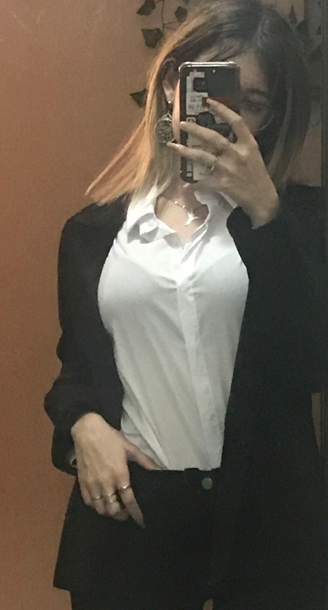

Por esos momentos en que todo se desmorona;
Espero nunca tener que seguir esta parte.
Porque vivir es difícil, y todo es un desafío nuevo. Porque no hay solución, y todo es una oportunidad.
Cuando sepan que el hombre de acero Esta hecho de alma y de pecados
No estás escribiendo Estoy con mi tren, ¿te gusta? Lo acabo de comprar ¿Y desde cuándo no escribís nada? Estuve de viaje Quizás ya no tengas nada que decir.
¿Qué te preocupa? De verdad, ¿qué? En el caos hay mucho ruido, todos gritan al mismo tiempo: ¡HAY QUE SER ALGUIEN! Ay... ¿no somos alguien ya? Se rompió una copa de vino.
Porque el amor propio es difícil, y todo se basa en amar Porque no hay solución, y todo es una oportunidad.
Mi vida ha estado llena de vergüenza. La verdad es que no tengo la más remota idea de lo que es vivir como un ser humano.
Pero bueno, ¿qué puedo saber yo con 16 años?
Un documento que resume todo lo que me hizo bien en esta vida, pesa unos míseros 5kb.
Por lo general, las personas no muestran lo terribles que son. Pero son como una vaca pastando tranquila que, de repente, levanta la cola y descarga un latigazo sobre el tábano. Basta que se le de la ocasion para que muestre su horrenda naturaleza. Este caracter innato es una condicion esencial para que el ser humano sobreviva. Al pensarlo, perdia cualquier esperanza sobre la humanidad.
Porque no hay solución, y todo es una oportunidad. Solo que ahora, te tengo a vos, y las oportunidades toman forma de solución.
Por todas las cosas que veo en tu alma, que vos no;

hehe, que fea se ve la foto!
una de cuando te chamuyaba

Espero nunca dejar de extrañarte.
LA MARICONA DEL NOVIO
CUANDO ES CON VOS SIENTO TODO IRREAL

Aunque bueno, mas bien le diste sentido a mi vida.
Yo hago el amor con las mentes Me seducen las mentes. Me seduce la inteligencia Me seduce una cara y un cuerpo cuando veo que hay una mente que las mueve y que vale la pena conocer Yo hago el amor con las mentes. Hay que follarse a las mentes Yo hago el amor con las mentes
Retiro lo dicho. Joder que si te follo.
Verte por primera vez fue como ver un cuadro. Un cuadro que refleja la totalidad del artista. Alguien al que nunca le gusta como le quedan las cosas, se siente feo e incapaz, sobrecargado. Pero bueno, pareciera que eso es todo lo que el ve, porque yo veo en sus obras, lo que el no. Porque tuve la suerte de ver a apenas centimetros, los ojos del artista. Vi como se dilataban sus pupilas, se sentía como si estuviera abriendo una puerta, como si estuviera en una habitación, con todo lo que pasa por su cabeza. Vi todo lo que tenía para decir, vi un niño que se escondia de todo lo que habitaba. Te obligaron a callar, la situación obligó a tu niño a esconderse, pero yo veo tus cuadros y se como sos de verdad. Sos mi artista favorito, y esto va por todo lo que vos no ves en tu alma. Quiero escuchar todo lo que tenes para decir, quiero ver todo lo que tenes para hacer, quiero sentir todo lo que tenes para dar, porque quiero estar con vos por el resto de mi vida, porque sos mi lugar seguro, porque siempre estas ahí, esperandome con un té que se esta enfriando porque siempre tardo. Te debo la vida, porque estuviste ahi incondicionalmente, dandome tu amor, cuando mi cabeza queria alejar a todos y toda la ayuda que tenia preparada para recibir. Que tu mamá haya pasado de abrazarte pidiendo que sigas adelante, a abrazarte emocionada de verte tan bien, aun sin saber la razón por la que estabas tan bien, me hizo sentir muy orgulloso y util, porque todo lo que hago es para que los dos estemos bien, y siento que eso es lo que esta pasando. Te amo tanto, tanto pero tanto tanto que no se como explicarselo a nadie, ni eso ni la sensación de estar absurdamente enamorado de alguien. Espero tener la calidez de tu cuerpo por lo que me queda de existencia, y te voy a ayudar con todo lo que este a mi alcance, esperando siempre verte a los ojos, y cada vez ver mas suelto a tu niño.
¿Y si no estuvieras aca?
Tu alegría gratuita, tu sonrisa por defecto Ni que el mundo fuera perfecto En serio, eres para mí un misterio.
Supongo que este es el resultado de escribir sin juzgarme